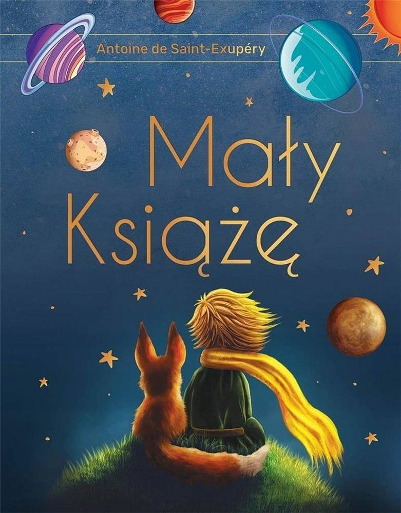

Tkaczyk News
SERWIS INFORMACYJNY
Recenzja książki "Mały Książę"
Autorem książki pt. "Mały Książę" jest Antoine de Saint-Exupery, który do tworzenia swoich dzieł, inspirację czerpał ze swoich doświadczeń podniebnego podróżnika. Utwór, w którym był pilotem, ukazał się w 1943 roku w Nowym Jorku. Książkę zadedykował swojemu przyjacielowi, który mieszkał we Francji, gdzie doskwierał mu głód i zimno. Miejsce akcji to Sahara, tysiąc mil od osad ludzkich. Głównym bohaterem przypowieści jest Mały Książę. Poznaje on pilota, którego samolot uległ awarii. Nieszczęśliwy i bardzo samotny Książę, postanawia opuścić swoją planetę. Odchodząc, zostawia swoją kapryśną, a zarazem piękną różę, która była powodem jego odejścia. Podróż Małego Księcia jest długa i wyczerpująca. Odwiedza planety Króla, Próżnego, Pijaka, Bankiera, Geografa i Latarnika. Chłopiec ocenia ich zachowania, po czym stwierdza, że dorośli są dziwni.Autor bardzo często wspomina o tych, którzy nie potrafią marzyć. Książę wyrusza na Ziemię, gdzie spotyka lisa, który pomaga mu zrozumieć istotę przyjaźni i miłości. Mały Książę postanawia wrócić na swoją planetę. Może to uczynić tylko dzięki żmii, której ukąszenie pomogłoby mu wrócić duchem do ukochanej Róży, by otoczyć ją opieką i wieść razem z nią szczęśliwe życie. Jest to rewelacyjna przypowieść dla dzieci, młodzieży jak i również dla dorosłych. Sprawy w niej poruszane są bliskie każdemu człowiekowi. Wszyscy szukamy przyjaźni i miłości, uczymy się zdobywać te wartości. W książce jest wiele elementów fantastycznych. Lektura "Mały Książę" jest warta polecenia. "Mały Książę" to oceniające spojrzenie dziecka na współczesny świat. Według mnie jest to znakomita lektura, którą powinien przeczytać każdy człowiek, niezależnie od wieku. Autor chce przekazać, że każdy ma coś z dziecka, ale powinien o to dbać. To właśnie dzięki temu potrafimy cieszyć się z prostych rzeczy, potrafimy marzyć i wierzyć w to, że te marzenia mogą się spełnić. Dorosłość to jest umiejętność wzięcia na siebie odpowiedzialności za drugiego człowieka. Dla niektórych książka może wydawać się trudna do zrozumienia, bo żeby ją zrozumieć, trzeba czytać wyobraźnią.
Nasza ocena: 8/10